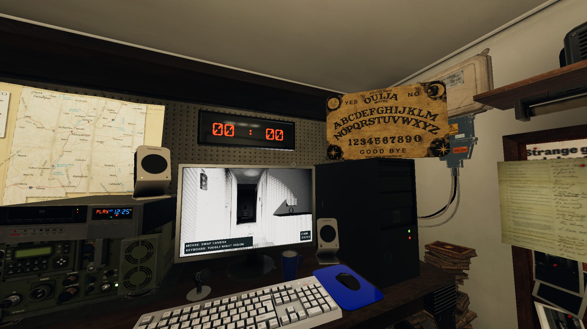

Ghost Characters
Up to 0.6.2.2
This page aims to provide information of all Ghost Characters in Phasmophobia gathered in one page, they can be whether obviously told or quite vague in the journal. Reminder all of them are sourced from Insym, Psycho, CJ and my daily plays, I will keep this always up to date and as accurate as possible, meanwhile deplete all the abandoned techniques within the newest version. However, Kinetic Games may change stuff without hinting us, be aware.
Another thing needs to be mentioned is some of the numbers in this guide are surely certain since they are provided by Developers directly, but some of them are not since specs are not released. I will provide them in a given range as an educated estimation.
Things that are worth noting:- Player's walking speed is 1.6-1.8m/s and sprinting speed is 3-3.2m/s.
- Ghost's hunting start speed is normally 1.6m/s if unmodified.
- Bloodlast: While a player is being chased and in Line of Sight(LOS) of the ghost, the ghost can accelerate exponetially and get fast really quickly.
- If not explicity mentioned, ghosts benefit from Bloodlast.
Spirit
- After being smudged, Spirit has 180s of hunting prevention period rather than 90s for general ghosts.
Wraith
- After walking on salt, Wraith is not able to leave any footprints.
- Wraith can teleport to any player at any time, doing so will generate EMF2/EMF5 and you can take interaction photos on the exact point, if you find this kind of EMF which literally comes out of nowhere with no interaction around, or the ghost can do interactions, ghost events or start hunts around you even if you are far away from the ghost room, then Wraith is one candidate to suspect.
Phantom
- Phantom will blink less frequently comparing to other ghosts, making it having a slightly longer invisible interval while hunting. (0.5-0.8s per blink comparing to 0.3s per blink for general ghosts).
- While taking photo of a Phantom, they will disappear, but the ghost event/hunt will not be effected by its de-manifestation, you should still hear its sounds. Also, you will get a ghost photo in journal successfully but there is no ghost in it.
- Phantom can walk up to players at any time ignoring the roaming distance constraint, it's quite like Wraith teleport but Phantom actually needs to walk up to you, and doing so will generate EMF2/EMF5, if you find this kind of EMF which literally comes out of nowhere with no interaction around, or the ghost can do interactions, ghost events or start hunts around you even if you are far away from the ghost room, then Phantom is one candidate to suspect.
- While looking at Phantom's manifestation while in range of the effect of a ghost event or hunt, sanity is doubly dropped comparing to general ghosts.
Poltergeist
- Poltergeist can throw multiple objects at once, although doing so will still give EMF2/EMF3, but if Activity Chart is available to you, you can find a HUGE peak of activity value can be up to 10, the activity is added by each item and for each item thrown, all players around this throw will drop 2% sanity.
- Poltergeist can make a strong throw as well.
Banshee
- Banshee is always obsessed with a player as its obsession. While during hunts, Banshee only cares about the obssession and will ignore other players completely, this means Banshee won't bother chasing or killing them, and players who are not the obssession cannot do any chasing related objectives.
- However, if Banshee's obsession is not in the search area (outside the main gate), Banshee will behave just like general ghosts without purposely targeting anyone.
- Banshee ONLY cares its obsession's sanity and behaves on that.
- Banshee can walk/follow up to their obsession regardless the roaming distance constraint, quite like Phantom walking up.
- Banshee prefers doing singing ghost event.
- Banshee's singing ghost event will drop obsession's sanity 5% extra.
- If the obsession dies, Banshee will pick up a new obsession immediately.
- Banshee can make high-pitch screaming on parabolic microphone.
Jinn
- All powers of Jinn only works while breaker is ON, turning it off disables them.
- Jinn cannot turn off breakers.
- Jinn can move faster while targeted player is 2m away while hunting (at approx. 2.3-2.5m/s), after getting close to the player it will slow down to normal hunting speed 1.5m/s and regain Bloodlast.
- If Jinn is 3m close to a player, it can decide to drop 25% of the sanity of all players in this 3m area. Be careful.
Mare
- Mare can start hunting at 60% of sanity if it locates in a room that is light off, but only 40% if in a room that is light on.
- Mare can not turn on lights.
- Mare has a stronger motivation to turn off lights.
- There is a chance that if a player turns on the light in its room, it will immediately switch it off.
- Mare is more likely to do light bulb explosion ghost event.
- Mare can be super insane once player's sanity is low and while the light is off, and the craziness scales up pretty quickly as sanity goes down. Its hunting cool-down can be significantly lowered and behave like a crazy Demon.
- Mare can be pushed away if certain area has too many lights, it will wander a long way in order to find a dark place.
Revenant
- While spotting a player in hunt, Revenant can zoom-zoom at 3m/s rushing to the player.
- Once Revenant has no player on sight, it can only travel at 0.8-1m/s.
- Revenant will lose speed boost and slow down once LOS is cut or being smudged.
- Revenant does not benefit from Bloodlast.
Shade
- Shade has 0% chance of doing ghost event while sanity is at 100%.
- For each 1% sanity loss, shade gain 2% more chance of doing ghost event, capped at 100%, means Shade will do ghost event like any other ghosts.
- Shade can only start hunting from 35% sanity level, instead of 50% for general ghosts.
- Shade prefers more on hissing, air-ball and shadow-manifestation ghost events, as the matter of fact, they prefer shadow manifestation so much, they can even manifest as shadow on Summoning Circle.
Demon
- Demon can start hunting regularly from 70% of sanity, instead of 50% for general ghosts.
- Demon can rarely hunt completely regardless the sanity. (from 100%)
- After being smudged, Demon only has 60s of hunting prevention period instead of 90s for general ghosts.
- Demon often has a much lower hunts cool down, with minimal of 20s to start another hunt, instead of 25s for general ghosts. You should expect chain-hunting from a Demon.
- Crucifix affects Demon in a 5m range instead of 3m for general ghosts.
Yurei
- Yurei can activate its power to drain 13% of sanity of all players in 8m range, doing so will make one door fully closed without any interaction, for this door close the closing sound will be delayed after the animation of closing.
- Yurei will be more constrained in the room where it is smudged for the duration of smudge.
- If comparing Yurei to other ghosts, Yurei would be expected to be a bit shy.
Oni
- Oni is mega-cracked, loving doing ghost events back to back, and even more insane while multiple people are around.
- Oni can throw objects at really high speed and really far, making it a strong giga yeet.
- Oni cannot do air-ball and shadow-manifesting ghost event. Be careful this does not mean Oni can't do hiss ghost event, you want to get eyes confirmed on air balls to rule out Oni as an option.
Yokai
- Yokai can be angered by player's talking, if a player is talking near a Yokai, it can start a hunt at 80% of sanity right on top of the noisy person.
- Yokai has a really limited range of hearing player's voice and detecting electronic devices while hunting. (2m range instead of 8m for general ghosts).
- Yokai is also more active if player is noisy and talkative, and really passive if player is quite.
Hantu
- Hantu always has Freezing as an evidence in Nightmare.
- Hantu cannot turn on breaker.
- Hantu has double the chance to turn off the breaker.
- Hantu does not have regular acceleration while chasing in hunts.
- Instead, Hantu's speed is heavily tied to the room temperature that it is located in.
- 1.4m/s while > 15C
- 1.5m/s while < 15C
- 1.75m/s while <= 12C
- 2.1m/s while <= 9C
- 2.3m/s while <= 6C
- 2.5m/s while <= 3C
- 2.7m/s while <= 0C
- Hantu does not benefit from Bloodlast.
Goryo
- Goryo always has D.O.T.S Projector as an evidence in Nightmare.
- Goryo's Dots cannot be seen with naked eyes, and can only be seen via night vision electronics while no one is in Goryo's room, otherwise it won't do it.
- Goryo is less likely to change its favorite room, it's wandering chance and distance is also limited and shorter.
Myling
- Myling seems more likely to have quieter vocal sounds in hunts.
- The true Quietness of Myling is the footstep sounds: If you are at same floor of a Myling with electronics on, you cannot hear any footsteps before your electronics are jammed.
- Myling probably responses little more on the parabolic microphone, but very unreliable.
Onryo
- Onryo has 60% sanity as hunting thershold, instead of 50% for normal ghosts.
- Onryo starts the game with 3 tokens, every time Onryo manages to blow a fire source out, it consumes one token. Fire sources so far are Candles, Lighters and Campfire.
- If all tokens are consumed, next time Onryo blows out a fire, it will have 50% of the chance to initiate a hunt regardless the sanity. (CJ clearly said intention of this early hunt should start at 80%, but this is not the case.)
- Remind the blow-out must be done by Onryo themselves, fire sources that put out naturally, by heavy rain or because thrown by players won't count.
- Every time a player dies, Onryo's fire-put-out hunt chance are increased by 25%.
- Onryo cannot start a hunt if multiple fire sources are presented and lighted. This makes light sources work quite like Crucifix: Everytime Onryo intends to start a hunt in the range of a Candle, it will blow it out instead. You can combine Candle and Crucifix to rule out Onryo as a option if Crucifix is used before light sources are put out, since Candle has even larger range than Crucifix. (4m comparing to 3ms)
- Onryo is heavily motivated on putting out fire sources. They can do this really fast and constantly.
The Twins
- Except the original ghost, there is a decoy playing as the role of the twin. However, though there are actually 2 entities playing as the ghosts, currently the implementation still binds them in certain area and not so separated. The outcome of this will be: you can sense the ghost is mainly staying in one area, but somehow it has a really long arm and will be able to interact something else pretty distantly.
- Besides above, The Twins always do stuff back to back, plus the distant factor, you can easily identify The Twins via this kind of "twinteraction". If Activity Chart is available, there will be a double tower pattern with edges nearly combined like a slope.
- The original ghost can give all 3 evidences, but decoy can only give EMF5 via interaction.
- While hunting, the decoy moves 110% fast of normal ghost movement while the original moves 90%.
- The decoy must start a hunt after an interaction.
- The decoy cannot trigger Motion Sensors.
Raiju
- While electronic devices are on and nearby, Raiju can start hunting from 65% of sanity, instead of 50% for general ghosts.
- While electronic devices are on and nearby, Raiju can gain power from them and makes it travel faster in hunting. (up to 2.65m/s)
- Raiju has a larger range of impacting the electronic devices. (10m range instead of 8m for general ghosts)
Obake
- Obake always has Fingerprints as an evidence in Nightmare.
- Obake can sometimes not leave a Fingerprints, while all other Fingerprint Ghosts always leaves Fingerprints. (75% instead of 100%)
- Obake can sometimes leave special six-finger Fingerprints on doors, windows, closets, lockers, and maybe cooling boxes. For cell doors and keyboards, it will present 5 fingers instead of 4 for general ghosts. For light switches there will be fingerprints way longer than the switch itself instead of a little nub for general ghosts. All Obake special fingerprints have fingers looks like a eagle's foot.
- Obake can activate its power to make the fingerprints it left half the time it preserves.
- Obake's interaction EMF goes away a little faster, or sometimes doesn't even there. (Could be bugged)
The Mimic
- If you have Ghost Orb, Spirit Box and Fingerprints, it is a Mimic as well.
- The Mimic is the only ghost presenting 3 evidences in Nightmare, one of them is fake Orb.
- The Mimic has a minimal time of one minute to switch who it's mimicking.
- The Mimic can mimick itself, making it a plain ghost.
- The Mimic can mimick the player, making it doing literally nothing.
- If The Mimic is mimicking a Thaye, it will pick a random age, and every time it succeeds on aging, it mimicks another ghost instead.
Moroi
- Moroi always has Spirit Box as an evidence on Nightmare.
- Moroi can curse players while answering questions through Spirit Box or giving paranormal sounds through Parabolic Microphone. While a player is cursed, any light sources and candles cannot prevent sanity dropping, and cursed player's sanity is doubly dropped passively. The curse can be paused while the cursed player leaving the investigating area and can be stopped while the cursed player taking a Sanity Pill.
- Moroi is hunting speed is bold to player's average sanity, upon entering the hunting sanity thershold, for every 5% lower the sanity, Moroi gains extra 0.075m/s speed.
- 1.5m/s while = 50%
- 1.875m/s while = 25%
- 2.25m/s while = 0%
- Moroi can be stunned by Smudge Sticks for 12 seconds instead 6 for general ghosts.
Deogen
- Deogen always sees all the players, while start hunting, it will pick the closest player as target (Euclid distance) and hunt after the player, if there is another player stepping in between and having a closer distance to the Deogen, Deogen may consider switching to target that player instead.
- Deogen's speed is bond to the distance between the Deogen and the targeted player, if the target is 6m away from the Deogen, it will zoom at 3m/s towards the target. While the distance is getting shorter, the Deogen's speed will drop considerably, ending up at 0.4m/s while 2.5m away from the target.
- Deogen can only start hunting at 40% of the sanity, instead of 50% for general ghosts.
- Deogen can make a special roar though Spirit Box while the player is asking questions right on top of the Deogen (1m range), there are 33% of the chances to get the roar in this situation.
- Deogen does not benefit from Bloodlast.
- Deogen has increased chances of doing Ghost Writing and D.O.T.S Projector.
Thaye
- Thaye is a ghost that ages, this aging can be reflected while asking questions with Ouija Board.
- Thaye starts the game with its youngest and most energetic form, it can start hunting at 75% of the sanity thershold instead of 50% for general ghosts, it can zoom at 2.75m/s hunting speed and has double to chance of doing interactions and ghost events.
- For every 1-2 minutes, if there is a player staying in the same room as Thaye, Thaye will age, if there is no player at the moment, there will be a 30-second window added before the next aging.
- Once Thaye ages, it will drop 6% of the hunting thershold, 0.175m/s hunting speed and 15% of the chance to do interactions and ghost events.
- Thaye can age for total of 10 times, The oldest Thaye can only hunt at 15% hunting thershold, 1m/s hunting speed and half the chance of doing interactions and ghost events.
- Thaye does not benefit from Bloodlast.
- Thaye has increased chances of doing Ghost Writing and D.O.T.S Projector.
Happy Ghost Hunting ;-)